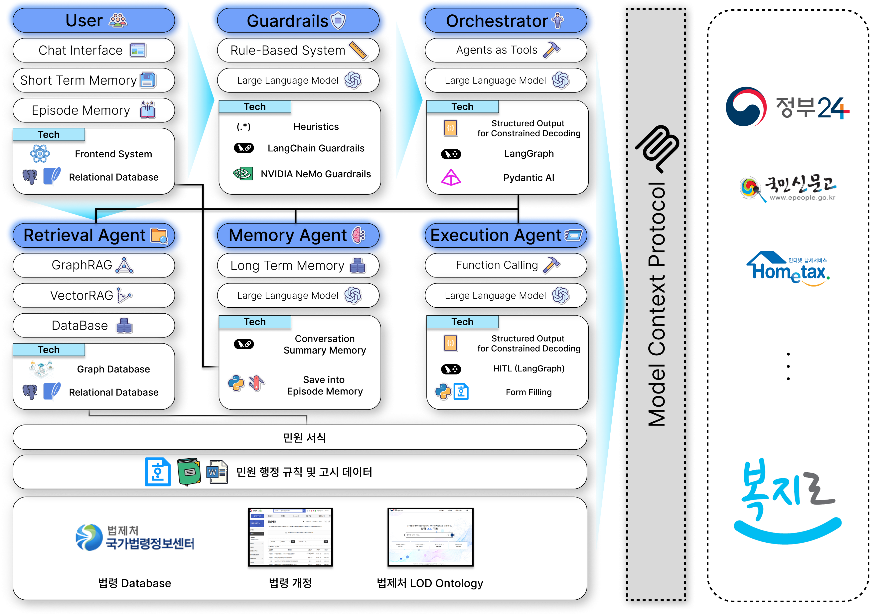
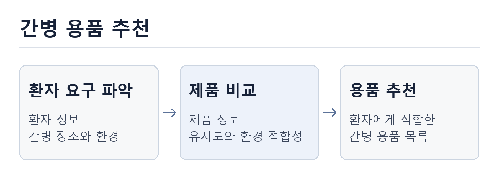

프로젝트
-

그림 확대민원 응대 프로토타입의 채팅 화면과 에이전트 구성도. -
 그림 확대
그림 확대
생산 로트별로 짝지은 QCP 센서 기록과 ICP 검사 결과. -
 그림 확대
그림 확대
포스코 과제 발표 자료. 라벨링한 화면에서 후판을 분할하고 아래쪽 윤곽을 뽑는 과정. -

그림 확대특허 출원 10-2023-0185772에 담긴 추천 절차. -
 그림 확대
그림 확대
등록 특허 10-2635315에 담긴 추천 절차.